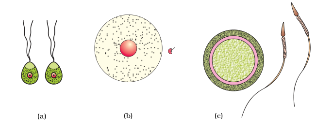
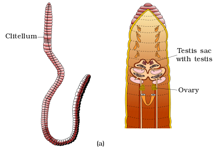
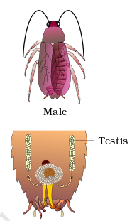
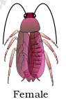
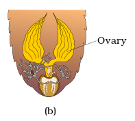
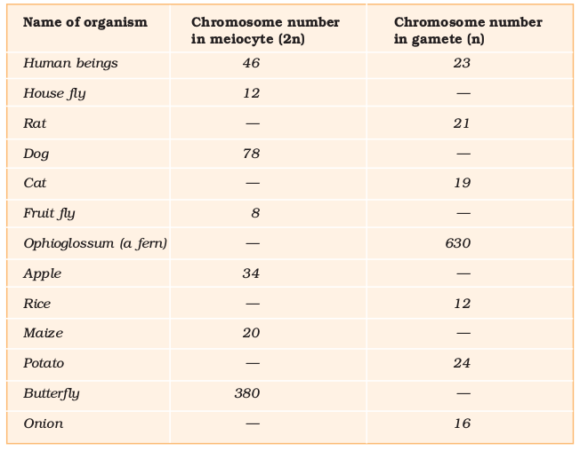

Chapter 1
Reproduction in Organisms
Reproduction in Organisms

Chapter 1
Reproduction in Organisms
Chapter 2
Sexual Reproduction in
flowering Plants
Chapter 3
Human Reproduction
Chapter 4
Reproductive Health
Biology in essence is the story of life on earth. While individual organisms die without fail, species continue to live through millions of years unless threatened by natural or anthropogenic extinction. Reproduction becomes a vital process without which species cannot survive for long. Each individual leaves its progeny by asexual or sexual means. Sexual mode of reproduction enables creation of new variants, so that survival advantage is enhanced. This unit examines the general principles underlying reproductive processes in living organisms and then explains the details of this process in flowering plants and humans as easy to relate representative examples. A related perspective on human reproductive health and how reproductive ill health can be avoided is also presented to complete our understanding of biology of reproduction.
Born in November 1904 in Jaipur (Rajasthan) Panchanan Maheshwari rose to become one of the most distinguished botanists not only of India but of the entire world. He moved to Allahabad for higher education where he obtained his D.Sc. During his college days, he was inspired by Dr W. Dudgeon, an American missionary teacher, to develop interest in Botany and especially morphology. His teacher once expressed that if his student progresses ahead of him, it will give him a great satisfaction. These words encouraged Panchanan to enquire what he could do for his teacher in return.
Panchanan Maheshwari
(1904-1966)

He worked on embryological aspects and popularised the use of embryological characters in taxonomy. He established the Department of Botany, University of Delhi as an important centre of research in embryology and tissue culture. He also emphasised the need for initiation of work on artificial culture of immature embryos. These days, tissue culture has become a landmark in science. His work on test tube fertilisation and intra-ovarian pollination won worldwide acclaim.
He was honoured with fellowship of Royal Society of London (FRS), Indian National Science Academy and several other institutions of excellence. He encouraged general education and made a significant contribution to school education by his leadership in bringing out the very first textbooks of Biology for Higher Secondary Schools published by NCERT in 1964.
1.1 Asexual Reproduction
1.2 Sexual Reproduction
Each and every organism can live only for a certain period of time. The period from birth to the natural death of an organism represents its life span. Life spans of a few organisms are given in Figure 1.1. Several other organisms are drawn for which you should find out their life spans and write in the spaces provided. Examine the life spans of organisms represented in the Figure 1.1. Isn’t it both interesting and intriguing to note that it may be as short as a few days or as long as a few thousand years? Between these two extremes are the life spans of most other living organisms. You may note that life spans of organisms are not necessarily correlated with their sizes; the sizes of crows and parrots are not very different yet their life spans show a wide difference. Similarly, a mango tree has a much shorter life span as compared to a peepal tree. Whatever be the life span, death of every individual organism is a certainty, i.e., no individual is immortal, except single-celled organisms. Why do we say there is no natural death in single-celled organisms? Given this reality, have you ever wondered how vast number of plant and animal species have existed on earth for several thousands of years? There must be some processes in living organisms that ensure this continuity. Yes, we are talking about reproduction, something that we take for granted.

Figure 1.1 Approximate life spans of some organisms
Reproduction is defined as a biological process in which an organism gives rise to young ones (offspring) similar to itself. The offspring grow, mature and in turn produce new offspring. Thus, there is a cycle of birth, growth and death. Reproduction enables the continuity of the species, generation after generation. You will study later in Chapter 5 (Principles of Inheritance and Variation) how genetic variation is created and inherited during reproduction.
There is a large diversity in the biological world and each organism has evolved its own mechanism to multiply and produce offspring.
The organism’s habitat, its internal physiology and several other factors are collectively responsible for how it reproduces. Based on whether there is participation of one organism or two in the process of reproduction, it is of two types. When offspring is produced by a single parent with or without the involvement of gamete formation, the reproduction is asexual. When two parents (opposite sex) participate in the reproductive process and also involve fusion of male and female gametes, it is called sexual reproduction.
1.1 Asexual Reproduction
(a)

(b)
Figure 1.2 Cell division in unicellular organism: (a) Budding in yeast; (b) Binary fission in Amoeba
In this method, a single individual (parent) is capable of producing offspring. As a result, the offspring that are produced are not only identical to one another but are also exact copies of their parent. Are these offspring likely to be genetically identical or different? The term clone is used to describe such morphologically and genetically similar individuals.
Let us see how widespread asexual reproduction is, among different groups of organisms. Asexual reproduction is common among
single-celled organisms, and in plants and animals with relatively simple organisations. In Protists and Monerans, the organism or the parent cell divides into two to give rise to new individuals (Figure1.2). Thus, in these organisms cell division is itself a mode of reproduction. Many single-celled organisms reproduce by binary fission, where a cell divides into two halves and each rapidly grows into an adult (e.g., Amoeba, Paramecium). In yeast, the division is unequal and small buds are produced that remain attached initially to the parent cell which, eventually gets separated and mature into new yeast organisms (cells).
Figure1.3 Asexual reproductive structures: (a) Zoospores of Chlamydomonas; (b) Conidia of Penicillium; (c) Buds in Hydra; (d) Gemmules in sponge
Members of the Kingdom Fungi and simple plants such as algae reproduce through special asexual reproductive structures (Figure 1.3). The most common of these structures are zoospores that usually are microscopic motile structures. Other common asexual reproductive structures are conidia (Penicillium), buds (Hydra) and gemmules (sponge).

(a)

(b)


Figure 1.4 Vegetative propagules in angiosperms: (a) Eyes of potato; (b) Rhizome of ginger; (c) Bulbil of Agave; (d) Leaf buds of Bryophyllum; (e) Offset of water hyacinth
You have learnt about vegetative reproduction in plants in Class XI. What do you think – Is vegetative reproduction also a type of asexual reproduction? Why do you say so? Is the term clone applicable to the offspring formed by vegetative reproduction?
While in animals and other simple organisms the term asexual is used unambiguously, in plants, the term vegetative reproduction is frequently used. In plants, the units of vegetative propagation such as runner, rhizome, sucker, tuber, offset, bulb are all capable of giving rise to new offspring (Figure1.4). These structures are called vegetative propagules. Obviously, since the formation of these structures does not involve two parents, the process involved is asexual.
You must have heard about the scourge of the water bodies or about the ‘terror of Bengal’. This is nothing but the aquatic plant ‘water hyacinth’ which is one of the most invasive weeds found growing wherever there is standing water. It drains oxygen from the water, which leads to death of fishes. You will learn more about it in Chapters 13 and 14. You may find it interesting to know that this plant was introduced in India because of its beautiful flowers and shape of leaves. Since it can propagate vegetatively at a phenomenal rate and spread all over the water body in a short period of time, it is very difficult to get rid off them.
Are you aware how plants like potato, sugarcane, banana, ginger, dahlia are cultivated? Have you seen small plants emerging from the buds (called eyes) of the potato tuber, from the rhizomes of banana and ginger? When you carefully try to determine the site of origin of the new plantlets in the plants listed above, you will notice that they invariably arise from the nodes present in the modified stems of these plants. When the nodes come in contact with damp soil or water, they produce roots and new plants. Similarly, adventitious buds arise from the notches present at margins of leaves of Bryophyllum. This ability is fully exploited by gardeners and farmers for commercial propagation of such plants.
It is interesting to note that asexual reproduction is the common method of reproduction in organisms that have a relatively simple organisation, like algae and fungi and that they shift to sexual method of reproduction just before the onset of adverse conditions. Find out how sexual reproduction enables these organisms to survive during unfavourable conditions? Why is sexual reproduction favoured under such conditions? Asexual (vegetative) as well as sexual modes of reproduction are exhibited by the higher plants. On the other hand, only sexual mode of reproduction is present in most of the animals.
1.2 Sexual Reproduction
Sexual reproduction involves formation of the male and female gametes, either by the same individual or by different individuals of the opposite sex. These gametes fuse to form the zygote which develops to form the new organism. It is an elaborate, complex and slow process as compared to asexual reproduction. Because of the fusion of male and female gametes, sexual reproduction results in offspring that are not identical to the parents or amongst themselves.
A study of diverse organisms–plants, animals or fungi–show that though they differ so greatly in external morphology, internal structure and physiology, when it comes to sexual mode of reproduction, surprisingly, they share a similar pattern. Let us first discuss what features are common to these diverse organisms.
All organisms have to reach a certain stage of growth and maturity in their life, before they can reproduce sexually. That period of growth is called the juvenile phase. It is known as vegetative phase in plants. This phase is of variable durations in different organisms.
The end of juvenile/vegetative phase which marks the beginning of the reproductive phase can be seen easily in the higher plants when they come to flower. How long does it take for marigold/rice/wheat/coconut/mango plants to come to flower? In some plants, where flowering occurs more than once, what would you call the inter-flowering period – juvenile or mature?
Observe a few trees in your area. Do they flower during the same month year after year? Why do you think the availability of fruits like mango, apple, jackfruit, etc., is seasonal? Are there some plants that flower throughout the year and some others that show seasonal flowering?
Plants–the annual and biennial types, show clear cut vegetative, reproductive and senescent phases, but in the perennial species it is very difficult to clearly define these phases. A few plants exhibit unusual flowering phenomenon; some of them such as bamboo species flower only once in their life time, generally after 50-100 years, produce large number of fruits and die. Another plant, Strobilanthus kunthiana (neelakuranji), flowers once in 12 years. As many of you would know, this plant flowered during September-October 2006. Its mass flowering transformed large tracks of hilly areas in Kerala, Karnataka and Tamil Nadu into blue stretches and attracted a large number of tourists. In animals, the juvenile phase is followed by morphological and physiological changes prior to active reproductive behaviour. The reproductive phase is also of variable duration in different organisms.
Can you list the changes seen in human beings that are indicative of reproductive maturity?
Among animals, for example birds, do they lay eggs all through the year? Or is it a seasonal phenomenon? What about other animals like frogs and lizards? You will notice that, birds living in nature lay eggs only seasonally. However, birds in captivity (as in poultry farms) can be made to lay eggs throughout the year. In this case, laying eggs is not related to reproduction but is a commercial exploitation for human welfare. The females of placental mammals exhibit cyclical changes in the activities of ovaries and accessory ducts as well as hormones during the reproductive phase. In non-primate mammals like cows, sheep, rats, deers, dogs, tiger, etc., such cyclical changes during reproduction are called oestrus cycle where as in primates (monkeys, apes, and humans) it is called menstrual cycle. Many mammals, especially those living in natural, wild conditions exhibit such cycles only during favourable seasons in their reproductive phase and are therefore called seasonal breeders. Many other mammals are reproductively active throughout their reproductive phase and hence are called continuous breeders.
That we all grow old (if we live long enough), is something that we recognise. But what is meant by growing old? The end of reproductive phase can be considered as one of the parameters of senescence or old age. There are concomitant changes in the body (like slowing of metabolism, etc.) during this last phase of life span. Old age ultimately leads to death.
In both plants and animals, hormones are responsible for the transitions between the three phases. Interaction between hormones and certain environmental factors regulate the reproductive processes and the associated behavioural expressions of organisms.
Events in sexual reproduction : After attainment of maturity, all sexually reproducing organisms exhibit events and processes that have remarkable fundamental similarity, even though the structures associated with sexual reproduction are indeed very different. The events of sexual reproduction though elaborate and complex, follow a regular sequence. Sexual reproduction is characterised by the fusion (or fertilisation) of the male and female gametes, the formation of zygote and embryogenesis. For convenience these sequential events may be grouped into three distinct stages namely, the pre-fertilisation, fertilisation and the post-fertilisation events.
1.2.1 Pre-fertilisation Events
These include all the events of sexual reproduction prior to the fusion of gametes. The two main pre-fertilisation events are gametogenesis and gamete transfer.
1.2.1.1 Gametogenesis
As you are already aware, gametogenesis refers to the process of formation of the two types of gametes – male and female. Gametes are haploid cells. In some algae the two gametes are so similar in appearance that it is not possible to categorise them into male and female gametes. They are hence called homogametes (isogametes) (Figure 1.5a). However, in a majority of sexually reproducing organisms the gametes produced are of two morphologically distinct types (heterogametes). In such organisms the male gamete is called the antherozoid or sperm and the female gamete is called the egg or ovum (Figure1.5 b, c).

Figure 1.5 Types of gametes: (a) Isogametes of Cladophora (an alga); (b) Heterogametes of Fucus (an alga); (c) Heterogametes of Homo sapiens (Human beings)
Sexuality in organisms: Sexual reproduction in organisms generally involves the fusion of gametes from two different individuals. But this
is not always true. From your recollection of examples studied in
Class XI, can you identify cases where self-fertilisation is observed? Of course, citing such examples in plants is easy.
Plants may have both male and female reproductive structures in the same plant (bisexual) (Figure 1.6 c, e) or on different plants (unisexual) (Figure 1.6d). In several fungi and plants, terms such as homothallic and monoecious are used to denote the bisexual condition and heterothallic and dioecious are the terms used to describe unisexual condition. In flowering plants, the unisexual male flower is staminate, i.e., bearing stamens, while the female is pistillate or bearing pistils. In some flowering plants, both male and female flowers may be present on the same individual (monoecious) or on separate individuals (dioecious). Some examples of monoecious plants are cucurbits and coconuts and of dioecious plants are papaya and date palm. Name the type of gametes that are formed in staminate and pistillate flowers.
But what about animals? Are individuals of all species either male or female (unisexual)? Or are there species which possess both the reproductive organs (bisexual)? You probably can make a list of several unisexual animal species. Earthworms, (Figure 1.6a) sponge, tapeworm and leech, typical examples of bisexual animals that possess both male and female reproductive organs, are hermaphrodites. Cockroach (Figure 1.6b) is an example of a unisexual species.
Cell division during gamete formation : Gametes in all heterogametic species are of two types namely, male and female. Gametes are haploid though the parent plant body from which they arise may be either haploid or diploid. A haploid parent produces gametes by mitotic division. Does this mean that meiosis never occurs in organisms that are haploid? Carefully examine the flow charts of life cycles of algae that you have studied in Class XI (Chapter 3) to get a suitable answer.
Clitellum






(e)
Figure 1.6 Diversity of sexuality in organisms (a) Bisexual animal (Earthworm); (b) Unisexual animal (Cockroach); (c) Monoecious plant (Chara); (d) Dioecious plan (Marchantia); (e) Bisexual flower (sweet potato)
Several organisms belonging to monera, fungi, algae and bryophytes have haploid plant body, but in organisms belonging to pteridophytes, gymnosperms, angiosperms and most of the animals including human beings, the parental body is diploid. It is obvious that meiosis, the reduction division, has to occur if a diploid body has to produce haploid gametes.
Table 1.1: Chromosome Numbers in Meiocytes (diploid, 2n) and Gametes (haploid, n) of Some Organisms. Fill in the Blank Spaces.



In diploid organisms, specialised cells called meiocytes (gamete mother cell) undergo meiosis. At the end of meiosis, only one set of chromosomes gets incorporated into each gamete. Carefully study Table 1.1 and fill in the diploid and haploid chromosome numbers of organisms. Is there any relationship in the number of chromosomes of meiocytes and gametes?
1.2.1.2 Gamete Transfer
After their formation, male and female gametes must be physically brought together to facilitate fusion (fertilisation). Have you ever wondered how the gametes meet? In a majority of organisms, male gamete is motile and the female gamete is stationary. Exceptions are a few fungi and algae in which both types of gametes are motile (Figure1.7a). There is a need for a medium through which the male gametes move. In several simple plants like algae, bryophytes and pteridophytes, water is the medium through which this gamete transfer takes place. A large number of the male gametes, however, fail to reach the female gametes. To compensate this loss of male gametes during transport, the number of male gametes produced is several thousand times the number of female gametes produced.

(a)

Figure 1.7 (a) Homogametic contact in alga; (b) Germinating pollen grains on the stigma of a flower
In seed plants, pollen grains are the carriers of male gametes and ovule have the egg. Pollen grains produced in anthers therefore, have to be transferred to the stigma before it can lead to fertilisation (Figure 1.7b). In bisexual, self-fertilising plants, e.g., peas, transfer of pollen grains to the stigma is relatively easy as anthers and stigma are located close to each other; pollen grains soon after they are shed, come in contact with the stigma. But in cross pollinating plants (including dioecious plants), a specialised event called pollination facilitates transfer of pollen grains to the stigma. Pollen grains germinate on the stigma and the pollen tubes carrying the male gametes reach the ovule and discharge male gametes near the egg. In dioecious animals, since male and female gametes are formed in different individuals, the organism must evolve a special mechanism for gamete transfer. Successful transfer and coming together of gametes is essential for the most critical event in sexual reproduction, the fertilisation.
1.2.2 Fertilisation
The most vital event of sexual reproduction is perhaps the fusion of gametes. This process called syngamy results in the formation of a diploid zygote. The term fertilisation is also often used for this process. The terms syngamy and fertilisation are frequently used though , interchangeably.
What would happen if syngamy does not occur?
However, it has to be mentioned here that in some organisms like rotifers, honeybees and even some lizards and birds (turkey), the female gamete undergoes development to form new organisms without fertilisation. This phenomenon is called parthenogenesis.
Where does syngamy occur? In most aquatic organisms, such as a majority of algae and fishes as well as amphibians, syngamy occurs in the external medium (water), i.e., outside the body of the organism. This type of gametic fusion is called external fertilisation. Organisms exhibiting external fertilisation show great synchrony between the sexes and release a large number of gametes into the surrounding medium (water) in order to enhance the chances of syngamy. This happens in the bony fishes and frogs where a large number of offspring are produced. A major disadvantage is that the offspring are extremely vulnerable to predators threatening their survival up to adulthood.
In many terrestrial organisms, belonging to fungi, higher animals such as reptiles, birds, mammals and in a majority of plants (bryophytes, pteridophytes, gymnosperms and angiosperms), syngamy occurs inside the body of the organism, hence the process is called internal fertilisation. In all these organisms, egg is formed inside the female body where they fuse with the male gamete. In organisms exhibiting internal fertilisation, the male gamete is motile and has to reach the egg in order to fuse with it. In these even though the number of sperms produced is very large, there is a significant reduction in the number of eggs produced. In seed plants, however, the non-motile male gametes are carried to female gamete by pollen tubes.
1.2.3 Post-fertilisation Events
Events in sexual reproduction after the formation of zygote are called post-fertilisation events.
1.2.3.1 The Zygote
Formation of the diploid zygote is universal in all sexually reproducing organisms. In organisms with external fertilisation, zygote is formed in the external medium (usually water), whereas in those exhibiting internal fertilisation, zygote is formed inside the body of the organism.
Further development of the zygote depends on the type of life cycle the organism has and the environment it is exposed to. In organisms belonging to fungi and algae, zygote develops a thick wall that is resistant to dessication and damage. It undergoes a period of rest before germination. In organisms with haplontic life cycle (As you have read
in Class XI), zygote divides by meiosis to form haploid spores that grow into haploid individuals. Consult your Class XI book and find out what kind of development takes place in the zygote in organisms with diplontic and haplo-diplontic life cycles.
Zygote is the vital link that ensures continuity of species
between organisms of one generation and the next. Every sexually reproducing organism, including human beings begin life as a single
cell–the zygote.
1.2.3.2 Embryogenesis
Embryogenesis refers to the process of development of embryo from the zygote. During embryogenesis, zygote undergoes cell division (mitosis) and cell differentiation. While cell divisions increase the number of cells in the developing embryo; cell differentiation helps groups of cells to undergo certain modifications to form specialised tissues and organs to form an organism. You have studied about the process of cell division and differentiation in the previous class.
Animals are categorised into oviparous and viviparous based on whether the development of the zygote takes place outside the body of the female parent or inside, i.e., whether they lay fertilised/unfertilised eggs or give birth to young ones. In oviparous animals like reptiles and birds, the fertilised eggs covered by hard calcareous shell are laid in a safe place in the environment; after a period of incubation young ones hatch out. On the other hand, in viviparous animals (majority of mammals including human beings), the zygote develops into a young one inside the body of the female organism. After attaining a certain stage of growth, the young ones are delivered out of the body of the female organism. Because of proper embryonic care and protection, the chances of survival of young ones is greater in viviparous organisms.
In flowering plants, the zygote is formed inside the ovule. After fertilisation the sepals, petals and stamens of the flower wither and fall off. Can you name a plant in which the sepals remain attached? The pistil however, remains attached to the plant. The zygote develops into the embryo and the ovules develop into the seed. The ovary develops into the fruit which develops a thick wall called pericarp that is protective in function (Figure 1.8). After dispersal, seeds germinate under favourable conditions to produce new plants.

Figure 1.8 A few kinds of fruit showing seeds (S) and protective pericarp (P)
Reproduction enables a species to live generation after generation. Reproduction in organisms can be broadly classified into asexual and sexual reproduction. Asexual reproduction does not involve the fusion of gametes. It is common in organisms that have a relatively simple organisation such as the fungi, algae and some invertebrate animals. The offspring formed by asexual reproduction are identical and are referred to as clones. Zoospores, conidia, etc., are the most common asexual structures formed in several algae and fungi. Budding and gemmule formation are the common asexual methods seen in animals.
Prokaryotes and unicellular organisms reproduce asexually by cell division or binary fission of the parent cell. In several aquatic and terrestrial species of angiosperms, structures such as runners, rhizomes, suckers, tubers, offsets, etc., are capable of giving rise to new offspring. This method of asexual reproduction is generally referred to as vegetative propagation.
Sexual reproduction involves the formation and fusion of gametes. It is a complex and slower process as compared to asexual reproduction. Most of the higher animals reproduce almost entirely by sexual method. Events of sexual reproduction may be categorised into pre-fertilisation, fertilisation and post-fertilisation events. Pre-fertilisation events include gametogenesis and gamete transfer while post-fertilisation events include the formation of zygote and embryogenesis.
Organisms may be bisexual or unisexual. Sexuality in plants is varied, particularly in angiosperms, due to the production of diverse types of flowers. Plants are defined as monoecious and dioecious. Flowers may be bisexual or unisexual flowers.
Gametes are haploid in nature and usually a direct product of meiotic division except in haploid organisms where gametes are formed by mitosis.
Transfer of male gametes is an essential event in sexual reproduction. It is relatively easy in bisexual organisms. In unisexual animals it occurs by copulation or simultaneous release. In angiosperms, a special process called pollination ensures transfer of pollen grains which carry the pollen grains to the stigma.
Syngamy (fertilisation) occurs between the male and female gametes. Syngamy may occur either externally, outside the body of organisms or internally, inside the body. Syngamy leads to formation of a specialised cell called zygote.
The process of development of embryo from the zygote is called embryogenesis. In animals, the zygote starts developing soon after its formation. Animals may be either oviparous or viviparous. Embryonal protection and care are better in viviparous organisms.
In flowering plants, after fertilisation, ovary develops into fruit and ovules mature into seeds. Inside the mature seed is the progenitor of the next generation, the embryo.
EXERCISES
1. Why is reproduction essential for organisms?
2. Which is a better mode of reproduction: sexual or asexual? Why?
3. Why is the offspring formed by asexual reproduction referred to as clone?
4. Offspring formed due to sexual reproduction have better chances of survival. Why? Is this statement always true?
5. How does the progeny formed from asexual reproduction differ from those formed by sexual reproduction?
6. Distinguish between asexual and sexual reproduction. Why is vegetative reproduction also considered as a type of asexual reproduction?
7. What is vegetative propagation? Give two suitable examples.
8. Define
(a) Juvenile phase,
(b) Reproductive phase,
(c) Senescent phase.
9. Higher organisms have resorted to sexual reproduction in spite of its complexity. Why?
10. Explain why meiosis and gametogenesis are always interlinked?
11. Identify each part in a flowering plant and write whether it is haploid (n) or diploid (2n).
(a) Ovary ———————————
(b) Anther ———————————
(c) Egg ———————————
(d) Pollen ———————————
(e) Male gamete ———————————
(f) Zygote ———————————
12. Define external fertilisation. Mention its disadvantages.
13. Differentiate between a zoospore and a zygote.
14. Differentiate between gametogenesis from embryogenesis.
15. Describe the post-fertilisation changes in a flower.
16. What is a bisexual flower? Collect five bisexual flowers from your neighbourhood and with the help of your teacher find out their common and scientific names.
17. Examine a few flowers of any cucurbit plant and try to identify the staminate and pistillate flowers. Do you know any other plant that bears unisexual flowers?
18. Why are offspring of oviparous animals at a greater risk as compared to offspring of viviparous animals?